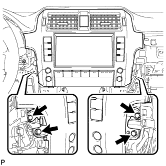
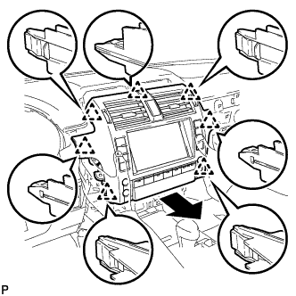
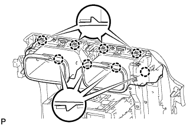

DISPLAY AND NAVIGATION ASSEMBLY > REMOVAL |
| 1. DISCONNECT CABLE FROM NEGATIVE BATTERY TERMINAL |
| Condition | Waiting Time |
| Vehicle enrolled in G-BOOK system | 6 minutes |
| Vehicle not enrolled in G-BOOK system | 1 minute |
| 2. REMOVE INSTRUMENT PANEL FINISH PANEL END LH |
 |
Detach the 11 clips and remove the instrument panel finish panel end.
| 3. REMOVE INSTRUMENT PANEL FINISH PANEL END RH |
 |
Detach the 11 clips and remove the instrument panel finish panel end.
| 4. REMOVE FRONT CONSOLE UPPER PANEL GARNISH |
 |
Detach the 2 clips and remove the front upper console panel garnish.
| 5. REMOVE SHIFT LEVER KNOB SUB-ASSEMBLY |
 |
Twist the shift lever knob in the direction indicated by the arrow and remove it.
| 6. REMOVE UPPER CONSOLE PANEL SUB-ASSEMBLY |
 |
Put protective tape around the upper console panel.
| *1 | Protective Tape |
 |
Using a moulding remover, detach the 7 clips.
Disconnect each connector and move the upper console panel in the direction of the arrow to remove it.
| 7. REMOVE RADIO RECEIVER ASSEMBLY WITH BRACKET |
w/o Navigation System:
 |
Remove the 4 bolts.
 |
Pull the radio receiver to detach the 6 clips and rib on the backside of the radio receiver.
Disconnect the connectors and remove the radio receiver.
w/ Navigation System:
 |
Remove the 4 bolts.
 |
Pull the radio receiver to detach the 6 clips and 3 ribs on the backside of the radio receiver.
Disconnect the connectors and remove the radio receiver.
| 8. REMOVE NO. 2 INSTRUMENT PANEL REGISTER ASSEMBLY |
 |
Detach the 8 clips and remove the No. 2 instrument panel register.
| 9. REMOVE CENTER INSTRUMENT CLUSTER FINISH PANEL GARNISH |
 |
Detach the 13 clips and remove the center instrument cluster finish panel garnish together with the instrument cluster finish panel garnish.
| *1 | Center Instrument Cluster Finish Panel Garnish |
| *2 | Instrument Cluster Finish Panel Garnish |
| 10. REMOVE LOWER INSTRUMENT PANEL FINISH PANEL ASSEMBLY |
 |
Detach the 4 clips.
Disconnect each connector and cooler thermistor and remove the instrument panel finish panel.
| 11. REMOVE DISPLAY AND NAVIGATION MODULE DISPLAY |
|  |
Remove the 4 bolts.
|  |
Pull the display and navigation module display to detach the 7 clips on the backside of the display and navigation module display.
Disconnect the connectors and remove the display and navigation module display.
| 12. REMOVE NO. 1 RADIO BRACKET |
Detach the claw and clamp and remove the connector.
Remove the 3 bolts and No. 1 radio bracket.
| 13. REMOVE NO. 2 RADIO BRACKET |
Remove the 3 bolts and No. 2 radio bracket.
| 14. REMOVE CENTER INSTRUMENT PANEL REGISTER ASSEMBLY |
|  |
Detach the 8 claws and remove the center instrument panel register.
| 15. REMOVE HAZARD WARNING SIGNAL SWITCH ASSEMBLY |
 |
Detach the 2 claws and remove the switch.